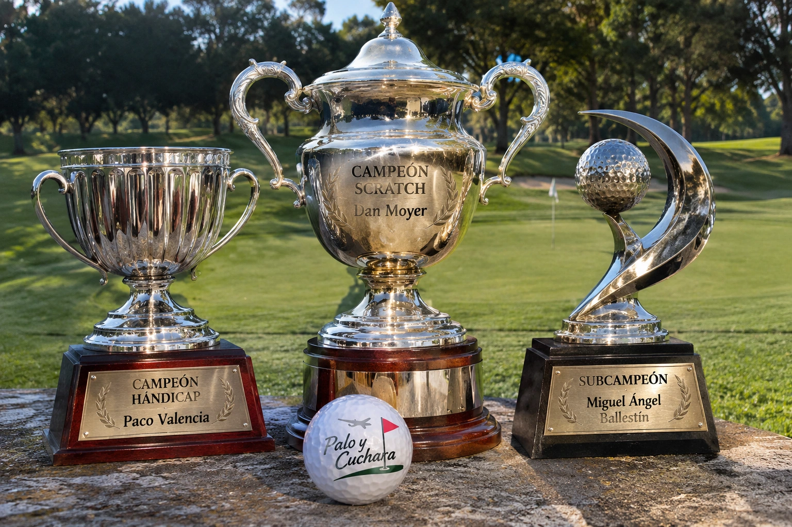

Un recuerdo especial a los jugadores destacados de la temporada anterior.
Conservamos la memoria de los campeones, sin trasladar el histórico de torneos mensuales.

Reconocimiento especial a los protagonistas de la temporada anterior. No se publicará el archivo mensual de torneos de aquella temporada.
Ver temporada actual